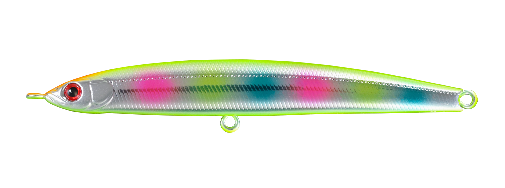
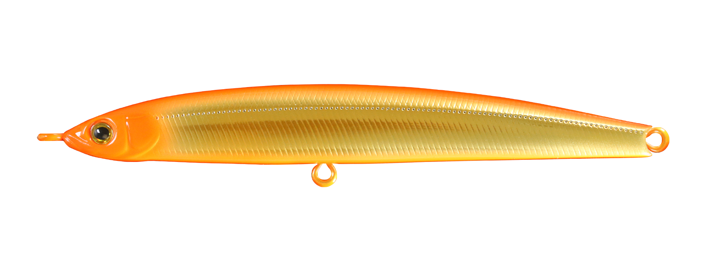
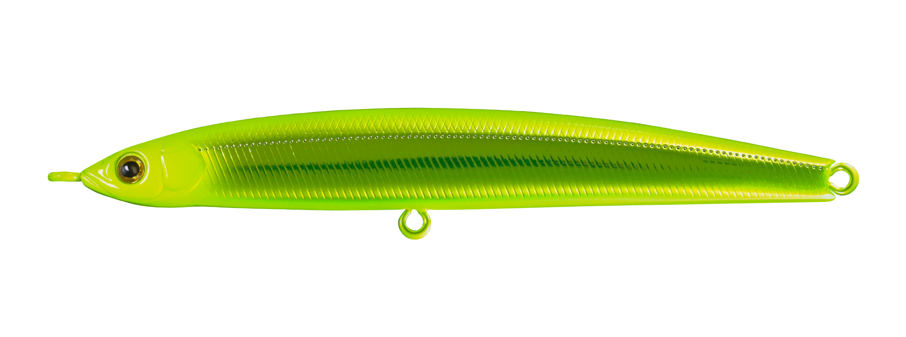
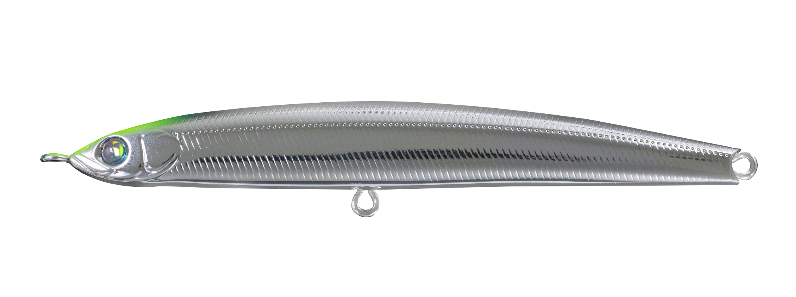

ザブラ モンスーンブレイカーサワラ
（ZBL MONSOON BREAKER SAWARA）
更新日：2026年11月3日
ザブラ モンスーンブレイカーサワラ（ZBL MONSOON BREAKER SAWARA）はZIPBAITS（ジップベイツ）のジグミノーです。
サワラゲームに合わせてモンスーンブレイカーを強化したモデルで、通常モデルより約20％重い35gで深場の底まで素早く届くのが最大の魅力。ブレードジグやミノーのジャーキングに反応しない魚を狙う新メソッド「トレジャーク」に対応します。

画像出典:ジップベイツ公式HP
スペック
- メーカー
- ZIPBAITS（ジップベイツ）
- タイプ
- ジグミノー（シンキング）
- 全長
- 115mm
- 自重
- 35.0g
- フック
- オリジナル太軸 #3
- リング
- #5
- ターゲット
- サワラ・サゴシ
- 価格
- 2,970円（税込）
- 発売
- 2026年9月
▼今すぐチェック
モンスーンブレイカーサワラの特徴
深場でも手返し良く底を取れる、サワラ向けのモンスーンブレイカー
-
重量を約20％アップして底取りを速く
通常のモンスーンブレイカーは15〜20mを超える深場だと底まで落とすのに時間がかかり、集中力を削がれやすい。サワラモデルは35gに増量し、この待ち時間を短くしている。
-
操作性を崩さない増量方法
内部のウエイトは同じまま、プラスチックを金属化してメッキを施す方法で重さを足している。重くしてもモンスーンブレイカーらしい操作感を保つための設計だ。
-
サワラのパワーに負けない太軸フック
フックはオリジナル太軸の#3、スプリットリングは#5にサイズアップ。サワラのパワーに負けない強度に仕上げている。
モンスーンブレイカーサワラの使い方
基本は公式が提案する「トレジャーク」。まず風上にフルキャストして底まで落とし、早巻きでジャークさせながら巻き上げ、時折ストップしてシミーフォールで誘うのが一連の流れです。
ストップを入れる位置やジャークの回数を変えながら、反応が出るレンジを探っていきましょう。
モンスーンブレイカーサワラの得意な状況
水深が15〜20mを超えるポイントで、底付近からしっかり探りたいサワラゲームが一番の出番です。
ブレードジグやミノーのジャーキングで反応がなくなった時の次の一手としても頼りになります。
ジャークとフォールで誘いを変えられるので、巻くだけのルアーに反応しないサワラが釣れるきっかけになる1本です。
ワンポイント
風上に投げるとラインが張りやすく、着底やジャークの感覚がつかみやすくなります。
着底したらすぐに巻き始めると、根掛かりを減らしながらテンポよく探れます。
モンスーンブレイカーシリーズの使い分け
| モデル | 全長／自重 | 得意な場面 |
|---|---|---|
| 115 | 115mm／29g | シリーズの基本形。遠投してジャークとフォールで広く探る |
| 115 サゴシEdition | 115mm／30g | 太軸#4フック・#4リング仕様。サゴシ狙いに |
| サワラ | 115mm／35g | 深場のサワラ。底取りの速さとフック強度を重視（本記事のモデル） |
| 130 | 130mm／38.5g | 太軸#2フック・#5リング仕様。より大きなシルエットで狙う時に |
同じ115mmでも、重さとフックの太さで出番が変わります。深場の底取りとサワラとのやり取りを重視するなら、サワラモデルを選びましょう。
人気カラー
モンスーンブレイカーサワラは全8色展開。人気カラーを紹介します。

パロットチャートUVチャート系のUVカラー。濁りや朝夕に存在を見せたい時に。

オレキンUVオレンジとゴールドの定番配色。濁り潮やローライトに。

シャインライムUVライム系の明るいカラー。反応を変えたい時の1色に。

チャートヘッドメッキUVメッキのフラッシングとチャートヘッドを組み合わせた、晴れた日にも使いやすい1色。
画像出典:ジップベイツ公式HP
モンスーンブレイカーサワラに似ているルアー
-
 ザブラ モンスーンブレイカー115
ジップベイツ
詳細はこちら＞
ザブラ モンスーンブレイカー115
ジップベイツ
詳細はこちら＞
同じ115mmの通常モデルで自重は29g。水深が浅い場所では、こちらのほうが扱いやすい。
-
 ステップマジック120S
アクアウェーブ
詳細はこちら＞
ステップマジック120S
アクアウェーブ
詳細はこちら＞
全長120mm・重さ21gのサワラ・サゴシ向けルアー。より軽いルアーで探りたい時の選択肢になる。
-
 アスリート12SSP
ジャクソン
詳細はこちら＞
アスリート12SSP
ジャクソン
詳細はこちら＞
全長120mm・自重33gのシンキングペンシル。後方重心でメタルジグに匹敵する飛距離が出て、着水後すぐにボトムを取れる。遠投してすぐ沈められる点が近く、スローに誘いたい時に使い分けやすい。